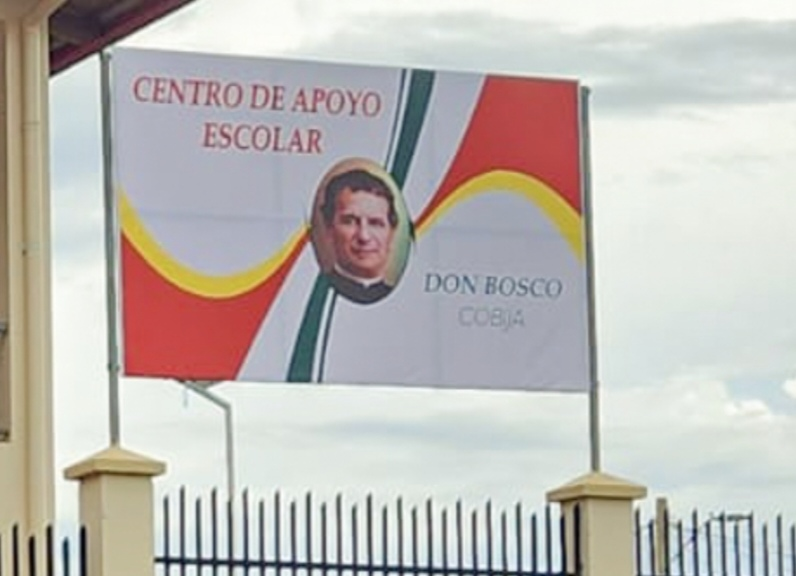
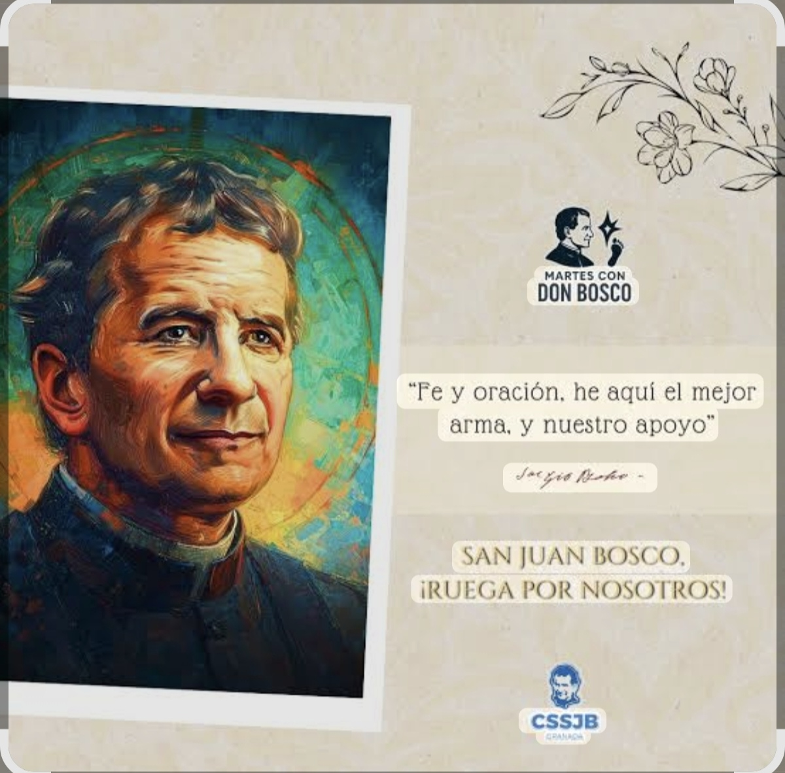
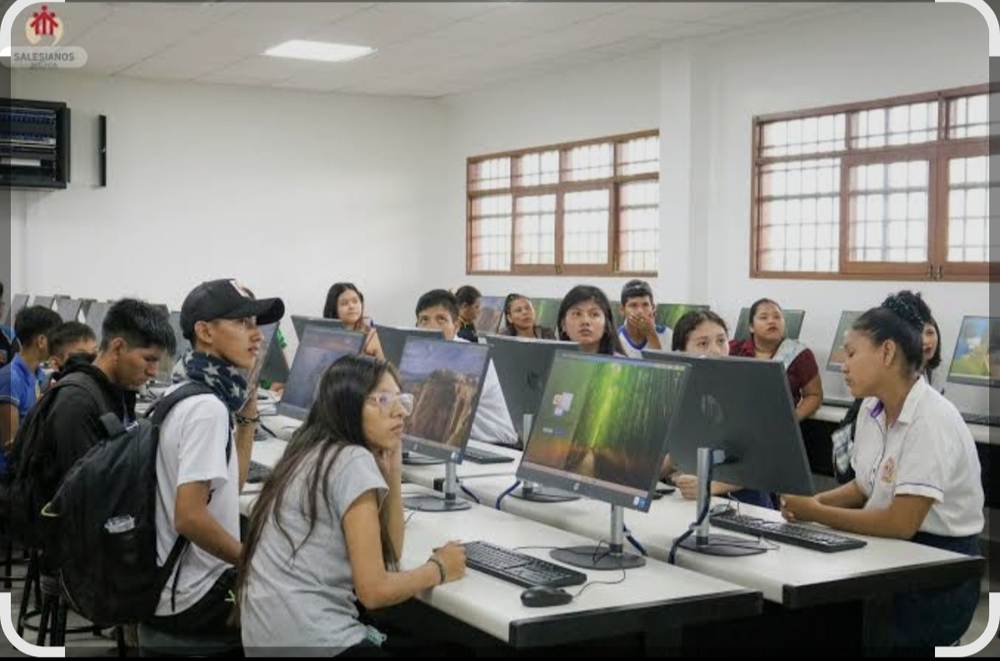
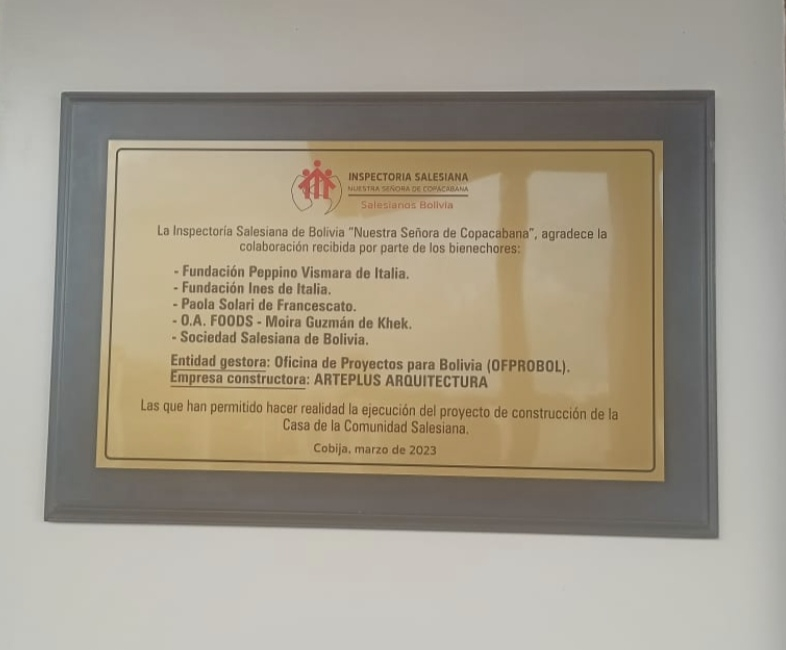

Nuestra institución
Un sitio web para fortalecer la presencia digital del instituto
La página centraliza información académica e institucional para estudiantes, docentes, padres de familia y público en general.
Objetivo del sitio
Diseñar e implementar una página web informativa que facilite el acceso a información institucional, académica, noticias, eventos, contacto y ubicación.
- Interfaz amigable, moderna y atractiva.
- Información institucional organizada.
- Secciones para noticias y eventos.
- Datos de contacto y ubicación visibles.
- Promoción del uso de herramientas tecnológicas.

Información para todos
Contenido organizado y fácil de consultar
La página está pensada para que cualquier persona encuentre la información que necesita de forma rápida.
🎓
Información académica
Comunicados, horarios, actividades educativas y datos importantes para estudiantes.
🏫
Información institucional
Historia, misión, visión, valores y datos generales del Instituto Don Bosco.
📢
Comunicados
Publicación de avisos oficiales para padres de familia, docentes y estudiantes.
📍
Ubicación y contacto
Acceso a dirección, mapa referencial, teléfono, correo y redes sociales.
Noticias
Últimos comunicados y novedades
Estos bloques pueden actualizarse con noticias reales del instituto.

Comunicado importante para la comunidad educativa
Espacio para publicar avisos, reuniones, actividades académicas o información general.
Leer más →
Participación estudiantil y actividades formativas
Contenido dedicado a mostrar actividades, ferias, exposiciones y proyectos estudiantiles.
Leer más →
Eventos y fechas importantes del instituto
Sección para informar fechas de actos, defensas, reuniones, inscripciones y más.
Ver eventos →
Agenda
Cronograma de actividades
Ejemplo de línea de tiempo dinámica para presentar las fases o eventos principales.
Pre defensa de perfil de grado
Presentación inicial y revisión del proyecto.
Presentación del perfil de grado
Socialización del avance y ajustes correspondientes.
Recolección de materiales
Preparación de textos, fotografías y recursos para la página.
Diseño y elaboración del proyecto
Construcción, pruebas y publicación del sitio web.
Galería
Espacios listos para agregar imágenes
Los recuadros están vacíos para que puedas colocar fotografías reales del instituto, estudiantes, eventos o ambientes.
ESPACIO PARA NUEVA IMAGENPuedes agregar otra foto aquí
Preguntas frecuentes
Información rápida
Contacto
Instituto Don Bosco de Cobija
Agrega aquí los datos oficiales del instituto para que la comunidad pueda comunicarse fácilmente.
📍 Dirección: Cobija, Pando - Bolivia
☎ Teléfono: __________________
✉ Correo: __________________
🌐 Redes sociales: __________________